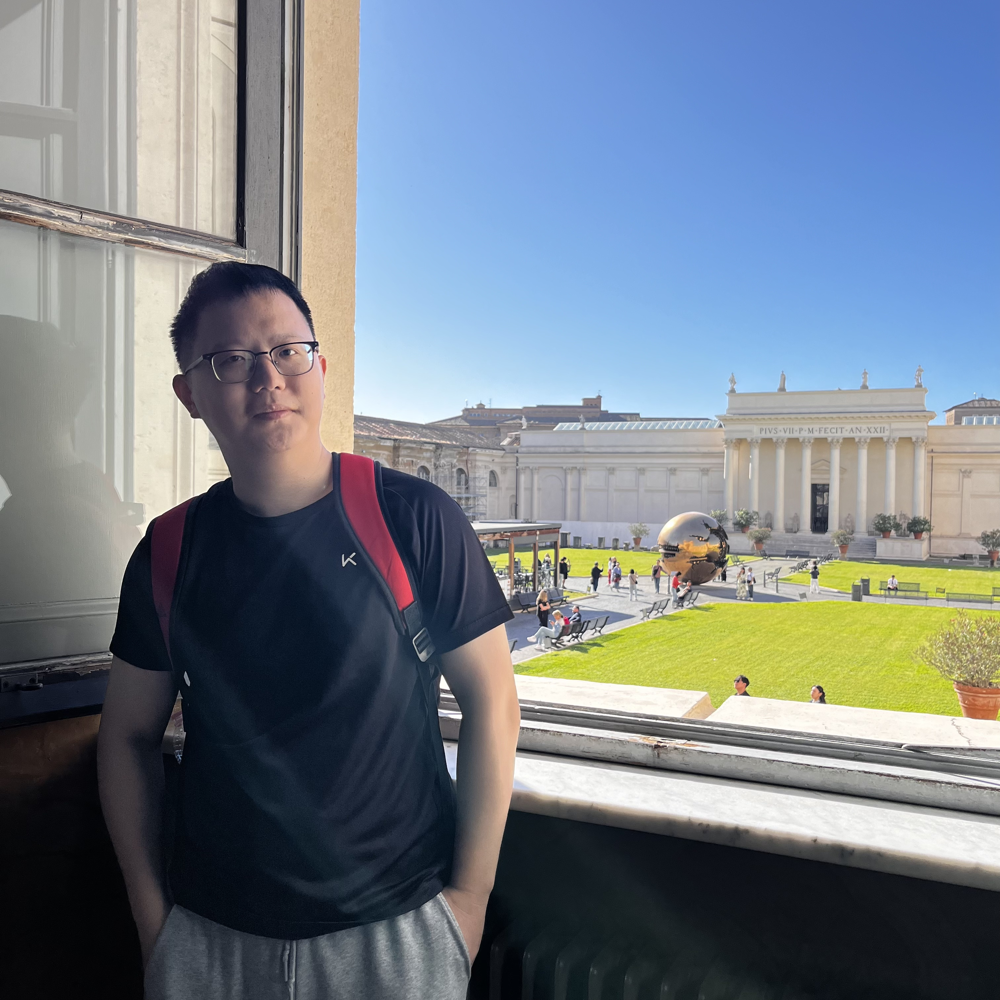

Guibao Shen
Ph.D. student |
 |
Biography
I am currently a third-year PhD student(since 2023) at the AI Thrust, The Hong Kong University of Science and Technology, Guangzhou, supervised by Prof. Yingcong Chen. Previously, I earned my Master's degree from the Shenzhen Institute of Advanced Technology(SIAT), Chinese Academy of Sciences, supervised by Prof. Pheng Ann Heng and Prof. Qiong Wang in 2022. I received my Bachelor's degree from Shandong University in 2019.
My research interests mainly lie in Generative Model(Image/Video Generation) and AI4Science(Protein Design and Medical Image Analysis).
Publications [Google Scholar]
*: Equal Contribution

StereoPilot: Learning Unified and Efficient Stereo Conversion via Generative Priors
Guibao Shen*, Yihua Du*, Wenhang Ge*, Jing He, Chirui Chang, Donghao Zhou, Zhen Yang, Luozhou Wang, Xin Tao, Ying-Cong Chen.
Arxiv Preprint, 2025.
[Project Page]
[Code]
[Paper]
SG-Adapter: Enhancing Text-to-Image Generation with Scene Graph Guidance
Guibao Shen*, Luozhou Wang*, Jiantao Lin, Wenhang Ge, Chaozhe Zhang, Xin Tao, Yuan Zhang, Pengfei Wan, Zhongyuan Wang, Guangyong Chen, Yijun Li, Ying-Cong Chen.
International Conference on Computer Vision (ICCV), 2025.
[Paper]
PRM: Photometric Stereo based Large Reconstruction Model
Wenhang Ge*, Jiantao Lin*, Guibao Shen*, Jiawei Feng, Tao Hu, Xinli Xu, Ying-Cong Chen
International Conference on Computer Vision (ICCV), 2025.
[Paper]
[Project Page]
[Code]
Motion Inversion for Video Customization
Luozhou Wang*, Ziyang Mai*, Guibao Shen, Yixun Liang, Xin Tao, Pengfei Wan, Di Zhang, Yijun Li, Ying-cong Chen
SIGGRAPH, 2025.
[Paper]
[Project Page]
[Code]
DivPro: Diverse Protein Sequence Design with Direct Structure Recovery Guidance
Xinyi Zhou*, Guibao Shen*, Yingcong Chen, Guangyong Chen, Pheng Ann Heng.
Bioinformatics (Accepted by ECCB&ISMB 2025)
[Paper]
[Code]
RectifiedHR: Enable Efficient High-Resolution Image Generation via Energy Rectification
Zhen Yang*, Guibao Shen*, Liang Hou, Mushui Liu, Luozhou Wang, Xin Tao, Pengfei Wan, Di Zhang, Ying-Cong Chen
Arxiv Preprint, 2025.
[Paper]
[Code]
Text-Anchored Score Composition: Tackling Condition Misalignment in Text-to-Image Diffusion Models
Luozhou Wang*, Guibao Shen*, Wenhang Ge, Guangyong Chen, Yijun Li, Ying-Cong Chen
European Conference on Computer Vision (ECCV), 2024.
[Paper]
[Project Page]
[Code]
LHNN: Lattice Hypergraph Neural Network for VLSI Congestion Prediction
Bowen Wang, Guibao Shen, Dong Li, Jianye Hao, Wulong Liu, Yu Huang, Hongzhong Wu, Yibo Lin, Guangyong Chen, Pheng Ann Heng
ACM/IEEE Design Automation Conference, DAC 2022
[Paper]
Learning Regularizer for Monocular Depth Estimation with Adversarial Guidance
Guibao Shen, Yingkui Zhang, Jialu Li, Mingqiang Wei, Qiong Wang, Guangyong Chen, Pheng Ann Heng
ACM Multimedia(MM), 2021.
[Paper]
Experience
-
Kling Team, Kuaishou
June 2024 - Jan 2025
Research Intern working on Video Generation -
Hong Kong University of Science and Technology, Guangzhou
Feb 2023 - Aug 2023
Research Assistant working on controllable image generation -
Zhejiang Lab
July 2022 - Jan 2023
Research Intern working on protein folding and design
Honors & Awards
| Postgraduate Scholarship, HKUST(GZ) | 2023-2027 |
| National Second Prize, Contemporary Undergraduate Mathematical Contest in Modeling(CUMCM) | 2017 |
| Dean's Scholarship, School of Software, Shandong University | 2018 |
| Outstanding Student Scholarship, Shandong University | 2016-2018 |
Academic Services
Reviewer of Conferences and Journals:
- ICLR: 2025
- CVPR: 2024, 2025
- AAAI: 2023
- T-MM: 2023
Personal Interests
- Table Tennis, Men's Singles 4th place in Shandong University
- Taekwondo Kokugiin Blackman 1st Dan
© Guibao SHEN | Last updated: Jul. 2025